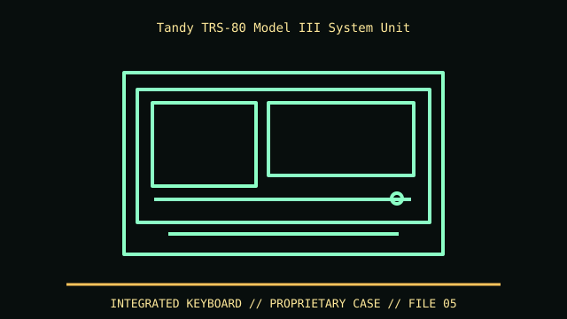

[ IDENTIFIED ENCLOSURE // RADIO SHACK TRS-80 MODEL III (26-1001 FAMILY, 1980) ]
Tandy TRS-80 Model III System Unit
Integrated monochrome CRT/keyboard desktop cabinet; approx. 19 × 17 × 15 in envelope in period references. The CRT cabinet needs ventilation and safe clearance for rear service access.

VARIANT / ARCHIVAL CAVEAT: Model III 16K/32K/48K and disk/diskless variants differ internally. Distinguish Model III from Model 4/4P; record catalog number, CRT/PSU and drive count before repair. CRT/PSU work requires qualified service.
Mechanical specifications and fit
| Catalog identity | Radio Shack TRS-80 Model III (26-1001 family, 1980) |
|---|---|
| Dimensions and clearances | Integrated monochrome CRT/keyboard desktop cabinet; approx. 19 × 17 × 15 in envelope in period references. The CRT cabinet needs ventilation and safe clearance for rear service access. |
| Drive bays / mounts | Two 5.25-inch floppy drives are optional internal bays; diskless configurations have different front bezels and internal brackets. |
| Board, system and compatibility | Proprietary Z80 board, CRT, PSU and keyboard; no ATX motherboard or PSU interchange. Disk controller and drive cable options depend on disk-equipped board configuration. |
| Revision / identification | Model III 16K/32K/48K and disk/diskless variants differ internally. Distinguish Model III from Model 4/4P; record catalog number, CRT/PSU and drive count before repair. CRT/PSU work requires qualified service. |
Preservation and installation notes
Model III 16K/32K/48K and disk/diskless variants differ internally. Distinguish Model III from Model 4/4P; record catalog number, CRT/PSU and drive count before repair. CRT/PSU work requires qualified service.
Proprietary Z80 board, CRT, PSU and keyboard; no ATX motherboard or PSU interchange. Disk controller and drive cable options depend on disk-equipped board configuration.
- Capture the complete model/SKU, serial/date label, board assembly and bay/backplane/riser identifiers before disassembly; keep matched screws, trays, carriers, feet and cables with the case.
- Check the cited manual's specific build option before transferring hardware. Published maximum GPU, drive, fan or radiator capacity may not be simultaneous when a removable cage or alternative riser occupies that volume.
- For rack and vintage systems, preserve the exact rails, shields, doors, brackets and model-specific safety instructions; do not infer compatibility from a familiar brand or physical connector shape.
Manufacturer manuals and archival sources
- TRS-80 Model III Operation Manual — Internet ArchivePrimary manufacturer or model-specific technical/manual reference used for the identification and mechanical data above.
- TRS-80 reference and service-document indexSecond product manual, manufacturer resource or established technical archive; choose the exact regional SKU and revision.
When exact dimensions depend on configuration, the text says so; verify the measured specimen before making a fit or restoration decision.